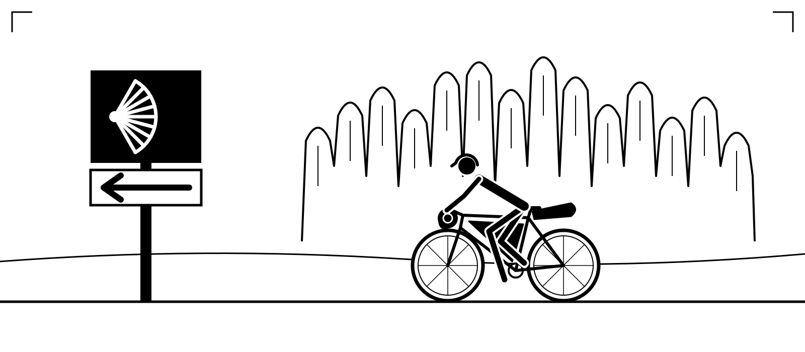
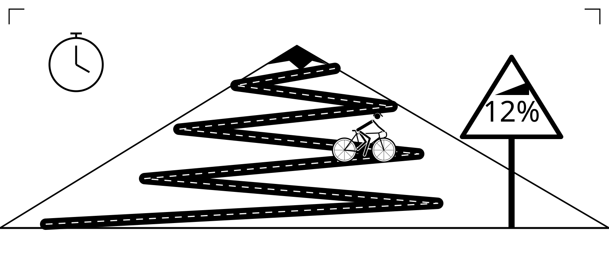
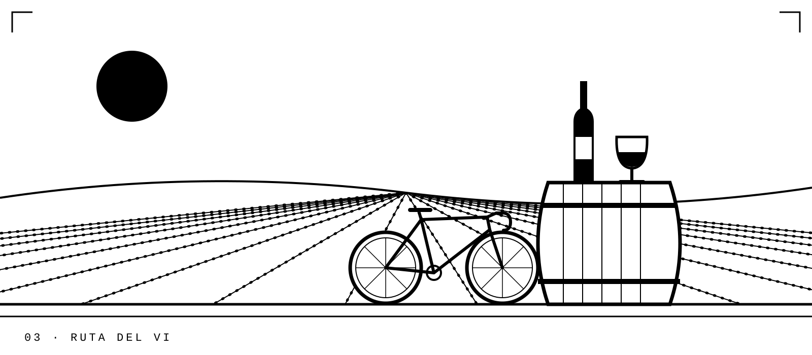
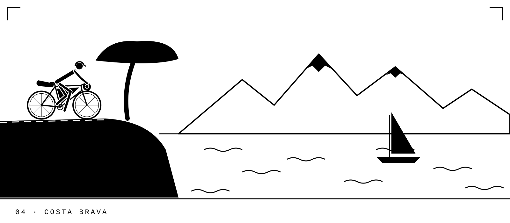
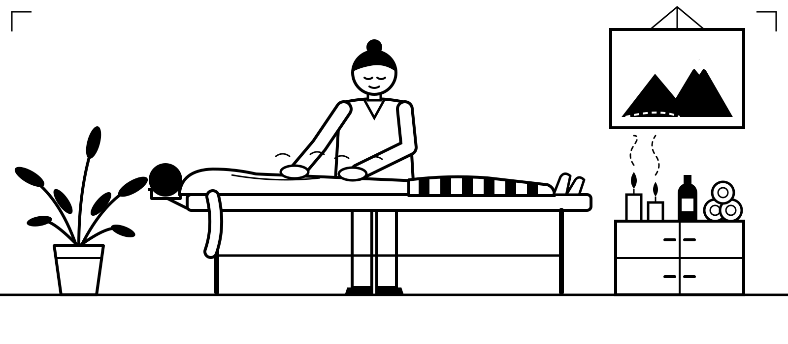
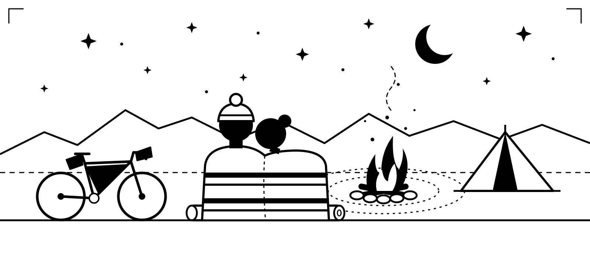
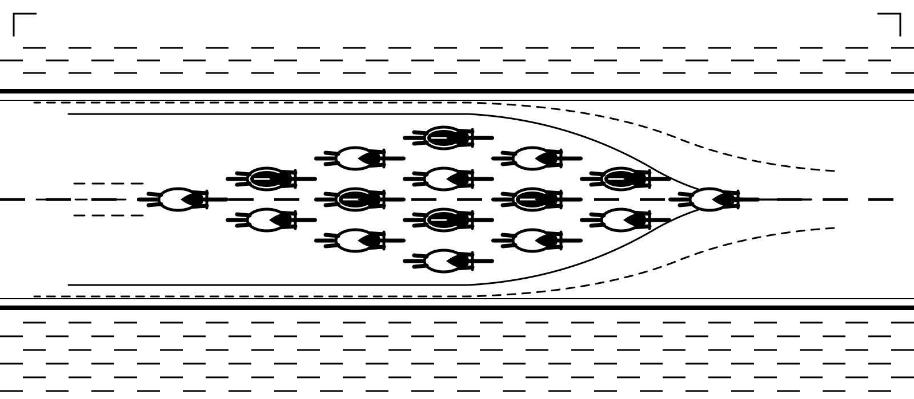
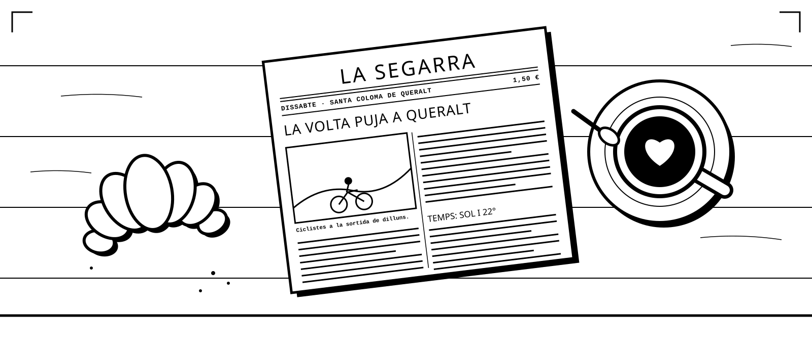

Llevamos años recorriendo las carreteras y los caminos de Cataluña, y estos son nuestros favoritos. Cada viaje se adapta a las necesidades del grupo: desde rutas de lujo totalmente asistidas, con guía, furgoneta de apoyo y hoteles preciosos, hasta el bikepacking más austero, al estilo vagabundo, con todo atado a la bici y un vivac bajo las estrellas.
Los grupos son pequeños y el ritmo lo marcan los ciclistas. Tanto si buscas vatios como si buscas paisajes, adaptaremos el día a ti.
Recorre el Camino de Santiago desde Montserrat hasta Santiago: hacia poniente por el interior de Cataluña, cruzando Aragón y La Rioja, y después por el Camino Francés a través de la meseta hasta Galicia. Iglesias románicas, pueblos en lo alto de las colinas y villas de peregrinos. Nosotros llevamos el equipaje; tú coleccionas los sellos.
Una semana de entrenamiento estructurado por los puertos y las carreteras vacías de la Baixa Segarra y las montañas de Prades. Sesiones diarias, entrenador, análisis de las salidas y buena comida para recuperar.
Cinco días tranquilos dedicados a todo lo que hace que este rincón de Cataluña sepa como sabe: vino y cava en bodegas familiares, molinos de aceite, masías y mercados, y largas comidas de cocina local. Por el camino, el monasterio de Poblet, la Montblanc medieval, castillos y la historia que hay detrás.
Nuestra tierra, sin hacer y deshacer maletas. Duermes cada noche en el mismo sitio, en Santa Coloma de Queralt, y cada día haces una vuelta distinta por carreteras secundarias donde verás más tractores que coches: pueblos de piedra, castillos y vistas largas. Menos lista de retos y más disfrutar del momento.
La gran aventura. De las carreteras ciclistas de Girona al corazón de los Pirineos, y después bajando hasta las calas de la Costa Brava. Totalmente asistida, con hoteles escogidos cada noche.
Cuéntanos qué quieres pedalear y lo montamos: salidas de un día, aventuras en gravel o bicicleta de montaña, grandes etapas épicas de un solo día, bikepacking de varios días o cualquier cosa intermedia. Ruta, ritmo, distancia y nivel de comodidad, todo a tu medida.
Añade cualquiera de estos extras a tu viaje, o pídenos lo que quieras.